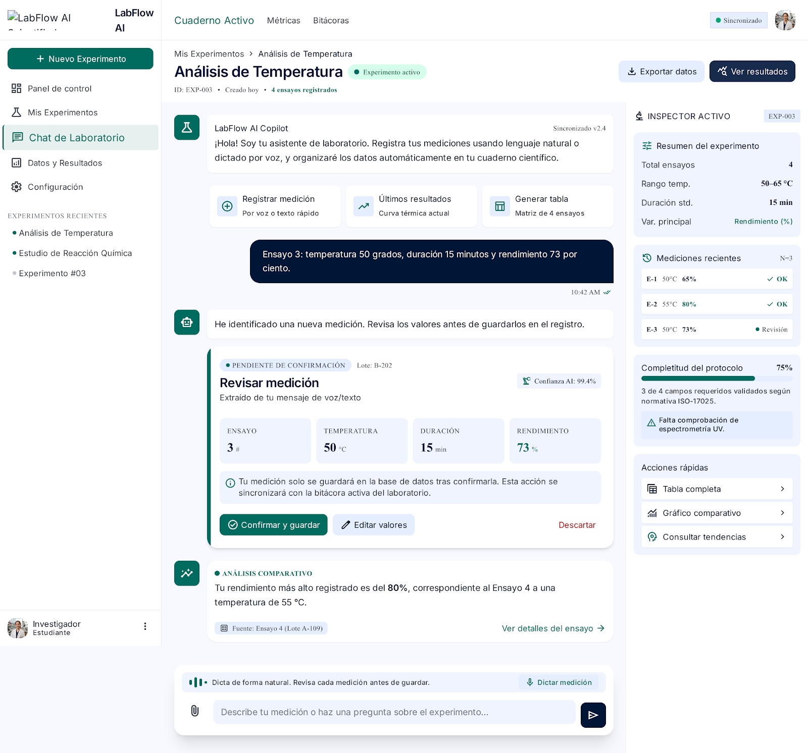

Cuaderno de laboratorio por voz · Entrega final · 30 de octubre de 2026
Web: Vercel · API: labflow-ai-production.up.railway.app
Problema. Durante una práctica de laboratorio, el estudiante de ingeniería química tiene las manos ocupadas (guantes, material, reactivos). Detenerse a anotar interrumpe el experimento; pasar los datos a Excel después introduce errores, y las mediciones o unidades faltantes se descubren al final.
Solución. LabFlow AI es un cuaderno de laboratorio por voz. El estudiante dicta una medición (“ensayo 3, temperatura 65 grados”), LabFlow la entiende, la guarda o pregunta cuando no está seguro, y la muestra al instante en una tabla, un gráfico X contra Y y respuestas sobre los datos, sin inventar cifras: la IA solo extrae; todo cálculo lo hace código determinista sobre los datos guardados.
Usuarios. Estudiantes de ingeniería química y auxiliares de investigación (secundario: profesores).
| ID | Requerimiento | Prioridad | Estado |
|---|---|---|---|
| RF-01 | Crear experimento con título, objetivo y variables (nombre, unidad, rango, esperada) | Imprescindible | Hecho |
| RF-02 | Listar y abrir experimentos | Imprescindible | Hecho |
| RF-03 | Registrar mediciones por voz | Imprescindible | Hecho |
| RF-04 | Registrar mediciones por texto (misma propuesta que dictada) | Imprescindible | Hecho |
| RF-05 | Mostrar propuesta y pedir confirmación cuando hay duda | Imprescindible | Hecho |
| RF-06 | Corregir por voz o editando, sin duplicados | Imprescindible | Hecho |
| RF-07 | Pedir aclaración ante datos ambiguos | Imprescindible | Hecho |
| RF-09 | Tabla de ensayos que coincide con lo guardado | Imprescindible | Hecho |
| RF-10 | Gráfico X contra Y | Imprescindible | Hecho |
| RF-11 | Preguntas: máximo, mínimo, promedio, conteo | Imprescindible | Resumen por variable hecho; preguntas por voz en curso |
| RF-12 | Advertir valores fuera de rango o unidades convertidas | Deseable | Hecho |
| RF-14 | Cargar protocolo PDF | Deseable | Hecho (propone variables) |
| RF-15 | Exportar a CSV | Deseable | Hecho |
| ID | Requerimiento | Cómo se cumple |
|---|---|---|
| RNF-01 | Español, números en palabras, decimales con coma | Lector de números y unidades en código (“setenta y tres coma cinco”, “grados” → °C) |
| RNF-02 | Propuesta en ≤ 5 s (objetivo 3 s) | Modelo rápido primero, respaldo con límite de tiempo, frase de relleno por voz |
| RNF-04 | Cero cifras inventadas | Cada número debe aparecer en la frase del usuario (grounding); las respuestas son plantillas fijas |
| RNF-05 | Trazabilidad | Cada medición guarda frase original, palabras dichas, origen (voz/texto), hora, turno y quién guardó |
| RNF-06 | Usabilidad | Micrófono siempre visible; versión de teléfono con barra inferior |
| RNF-08 | Seguridad | Claves solo en servidor; acceso por código; no se guarda audio |
| RNF-09 | Tolerancia a fallos | Si falla la voz o el modelo, el registro por texto sigue funcionando |
Plantilla OwnML Machine Learning Canvas v1.2 (Louis Dorard, CC BY-SA 4.0), actualizada con lo construido.
Mockup de referencia: micrófono al centro (pulsar para hablar), tarjeta de confirmación debajo y tabla de ensayos al lado.

handle_utterance). El agente de ElevenLabs solo convierte voz a texto y texto a voz; usa nuestra API como su “Custom LLM”, así que la respuesta hablada es exactamente nuestro texto.proponer_medicion, corregir, confirmar, …). Un planificador puro en código ancla cada número en la frase del usuario, convierte unidades, aplica rangos y decide qué se guarda y qué se pregunta. Las respuestas al usuario salen de plantillas fijas en español.openapi.json y los tipos TypeScript del web.experiment → variable (unidad, rango, esperada, alias) · trial (número) → measurement (valor, frase original, palabras dichas, origen, turno, guardado por, guardado automático) · proposal (tarjeta: pendiente, confirmada, descartada, reemplazada; una pendiente por cuaderno) · turn (historial de la conversación).
| Nivel | Herramienta | Qué cubre | Cantidad |
|---|---|---|---|
| Unitarias (API) | pytest | Planificador puro, lector de números y unidades, advertencias, plantillas de respuesta, reglas de sesión de voz | ≈ 490 pruebas |
| Integración (API) | pytest + FastAPI TestClient + Postgres real | Rutas de captura, voz (Custom LLM con SSE), deshacer, carreras entre pestañas; cada prueba corre en una transacción que se revierte | |
| Unitarias y de componentes (web) | Vitest + Testing Library + axe | Tarjeta, aviso de guardado, flujo de captura, tabla, gráfico, accesibilidad | 570 pruebas |
| Extremo a extremo (teléfono) | Playwright | iPhone 390×844 y Android 412×915: navegación, sin desplazamiento lateral, hojas a pantalla completa, campos de 16 px | 42 pruebas |
| Prueba en vivo de modelos | Smoke test con claves reales | Exactitud y latencia de cada proveedor sobre frases reales | Manual |
| Verificación por spec | verify.md por decisión | Pasos manuales trazados a cada criterio de aceptación (AC) | Por feature |
| Caso | Esperado |
|---|---|
| “ensayo 3, temperatura 65 grados” | Guarda 65 °C en el ensayo 3, no pregunta por las demás variables |
| Valor que reemplaza uno guardado | No guarda; pregunta “¿Cambio … de 65 a 68 °C?”; “sí” reemplaza sin duplicar |
| Mitad limpia y mitad dudosa | Guarda lo limpio, deja una tarjeta con lo dudoso |
| Número que no está en la frase | Nunca llega a la tarjeta (anti alucinación) |
| “23 a 71” para una variable | Pregunta cuál guardar, nunca elige |
| Otra pestaña llena la casilla a la vez | La inserción no sobrescribe; pregunta el cambio |
| “deshacer” por voz | Quita lo último guardado, deja la tarjeta pendiente |
| Falla el modelo principal | Respaldo con Claude registrado en el log; si ambos fallan, 503 y la tarjeta sigue |
Integración continua. GitHub Actions en cada PR y en main: lint, tipos (TypeScript estricto, pyright estricto) y pruebas de web y API. Antes de cada commit, lefthook corre formato, lint, tipos y pruebas.
LabFlow no entrena modelos: usa modelos preentrenados por API detrás de una interfaz (LLMProvider), lo que permite cambiarlos sin tocar la lógica. La selección se hizo con una prueba en vivo sobre frases reales de laboratorio (spec 0006).
| Detalles | LLM de propósito general, versión deepseek-v4.1-flash, servido por Ollama Cloud. Proveedor principal. |
|---|---|
| Uso previsto | Leer una frase en español y devolver una llamada a herramienta con ensayo, variable, valor y unidad, o la intención (confirmar, corregir, descartar, aclarar). |
| Fuera de alcance | Calcular estadísticas, escribir respuestas al usuario, decidir qué se guarda. Eso lo hace el código. |
| Entradas | Frase del usuario, variables del cuaderno con unidades y alias, tarjeta pendiente, historial corto, contexto del cuaderno. |
| Métricas | Exactitud por campo, cifras inventadas (deben ser 0), latencia ≤ 5 s. Resultado en la prueba en vivo: 50/50 frases correctas. |
| Por qué se eligió | Rápido y barato, buen español y buena llamada a herramientas. |
| Limitaciones y mitigación | Puede leer un número que no se dijo o asignar mal la variable. Mitigación: cada número debe encontrarse en la frase; valores dudosos se marcan; nada se guarda sin pregunta si reemplaza o tiene advertencias; “Deshacer”. |
| Detalles | claude-haiku-5-5, mismo esquema de herramientas. |
|---|---|
| Uso previsto | Respaldo automático cuando el principal falla o pasa su límite de tiempo (llamada “hedged”). Cada uso se registra. |
| Métricas | Las mismas que el principal; se vigila la tasa de uso del respaldo. |
| Limitaciones | Costo mayor: tiene un límite de llamadas por usuario. Mismas protecciones de código que el principal. |
| Detalles | Reconocimiento de voz de ElevenLabs dentro de un agente conversacional (detección de turno con “speculative turn”). |
|---|---|
| Uso previsto | Transcribir el dictado en español en tiempo real, manos libres. |
| Por qué se eligió | Comparado con Whisper: baja latencia en streaming, buen español, y el mismo agente maneja voz de entrada y salida. |
| Limitaciones | Ruido del laboratorio, acentos, números parecidos (“sesenta” / “setenta”). Mitigación: la tarjeta muestra “Dijiste” contra “LabFlow entendió”; el texto escrito siempre está disponible. No se guarda audio. |
| Detalles | eleven_flash_v2_5, voz en español. |
|---|---|
| Uso previsto | Leer en voz alta la respuesta fija de LabFlow (“Guardado ensayo 3: 65 °C. Di deshacer para quitarlo.”). |
| Por qué se eligió | Latencia muy baja, adecuada para conversación. |
| Limitaciones | Solo lee textos que genera nuestro servidor; nunca inventa contenido. |
Datos ficticios o de práctica académica; claves solo en el servidor; acceso por código; sin almacenamiento de audio; cada medición es trazable a la frase que la produjo; la IA nunca calcula ni redacta cifras para el usuario.